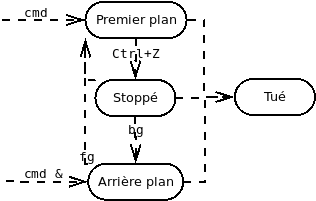
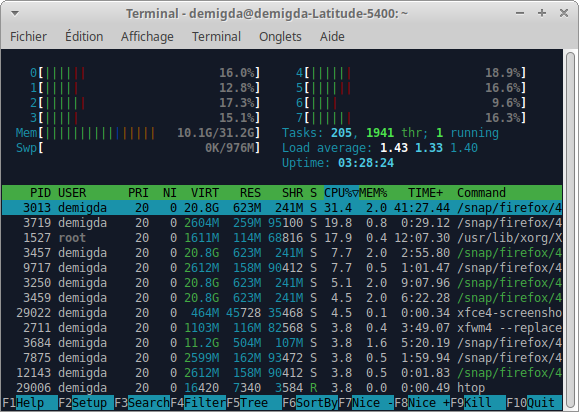
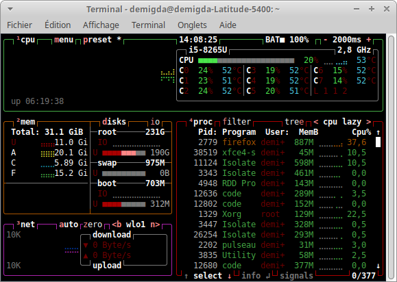
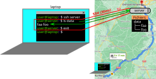
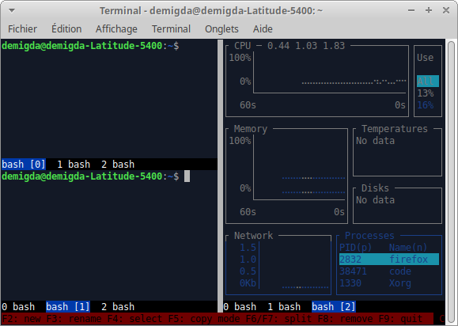

Processus et accès à distance
Les processus
Pour exécuter un programme, l'ordinateur utilise :
- Un CPU : pour exécuter les instructions.
- La RAM (et des caches) : pour l'état du programme.
💡 Le CPU possède un à plusieurs processeurs contenant eux-même plusieurs cœurs physiques. Un cœur physique peut posséder des cœurs virtuels (parfois appelés threads) lui permettant d'exécuter plusieurs programmes simultanément.
cpufetch
$ cpufetch
.#################.
.#### ####. Name: Intel Core i5-8265
.## ### uArch: Comet Lake
## :## ### Technology: 14nm
# ## :## ## Max Freq: 3.900 GHz
## ## ######. #### ###### :## ## Cores: 4 cores (8 threads
## ## ##: ##: ## ## ### :## ### AVX: AVX,AVX2
## ## ##: ##: ## :######## :## ## FMA: FMA3
## ## ##: ##: ## ##. . :## #### L1i Size: 32KB (128KB Total)
## # ##: ##: #### #####: ## L1d Size: 32KB (128KB Total)
## L2 Size: 256KB (1MB Total)
###. ..o####. L3 Size: 6MB
######oo... ..oo####### Peak Perf.: 499.20 GFLOP/s
o###############o neofetch
$ neofetch
`-/osyhddddhyso/-` demigda@demigda-Latitude-5400
.+yddddddddddddddddddy+. -----------------------------
:yddddddddddddddddddddddddy: OS: Xubuntu 24.04.3 LTS x86_64
-yddddddddddddddddddddhdddddddy- Host: Latitude 5400
odddddddddddyshdddddddh`dddd+ydddo Kernel: 6.8.0-78-generic
`yddddddhshdd- ydddddd+`ddh.:dddddy` Uptime: 6 days, 7 hours, 3 mins
sddddddy /d. :dddddd-:dy`-ddddddds Packages: 4303 (dpkg), 28 (snap)
:ddddddds /+ .dddddd`yy`:ddddddddd: Shell: bash 5.2.21
sdddddddd` . .-:/+ssdyodddddddddds Resolution: 1366x768
ddddddddy `:ohddddddddd DE: Xfce 4.18
dddddddd. +dddddddd WM: Xfwm4
sddddddy ydddddds WM Theme: Default
:dddddd+ .oddddddd: Theme: Greybird [GTK2/3]
sdddddo ./ydddddddds Icons: elementary-xfce-dark [GTK2/3]
`yddddd. `:ohddddddddddy` Terminal: xfce4-terminal
oddddh/` `.:+shdddddddddddddo Terminal Font: DejaVu Sans Mono 9
-ydddddhyssyhdddddddddddddddddy- CPU: Intel i5-8265U (8) @ 3.900GHz
:yddddddddddddddddddddddddy: GPU: Intel WhiskeyLake-U GT2 [UHD Graphics 620]
.+yddddddddddddddddddy+. Memory: 18416MiB / 31943MiB
`-/osyhddddhyso/-`
💡 Lorsqu'on exécute des calculs, il est important d'estimer ses besoins en fonction des ressources à dispositions. Par exemple, il est inutile de lancer un calcul nécessitant 64Go de RAM sur un poste de travail n'en a que 16Go. De même, il n'est pas utile d'utiliser un serveur de calculs si le poste de travail suffit.
Qu'est-ce qu'un processus ?
Un processus représente un programme en cours d'exécution. Un programme est composé d'une suite d'instructions processeurs exécutées sur un cœur (core). Ils sont identifiés par un PID (Process Identifier). Cet identifiant permet notamment d'envoyer des signaux aux processus, e.g. pour les tuer :
- : tue le processus.
- : tuer les commandes CMD.
Un processus peut se retrouver dans 3 "états" particuliers :
- mis en arrière plan : ne bloque pas le terminal ;
- déshérité : adopté par le processus .
- service : processus contrôlé via .
Processus d'arrière-plan
Par défaut, un processus est lancé en premier-plan (foreground) et bloque le terminal lors de son exécution. Il est cependant possible de le lancer un arrière-plan en ajoutant `&` à la fin de la ligne de commande. Ainsi, vous pourrez entrer d'autres lignes de commandes pendant l'exécution du processus d'arrière plan.
Vous pouvez stopper un processus de premier plan via `Ctrl+Z` puis utiliser :
- `bg` (background): pour le relancer en arrière plan.
- `fg` (foreground): pour le relancer en premier plan.
- `jobs` : liste les processus en arrière plan.

Les services
Les services, aussi appelés daemon, sont des processus d'arrière-plan adoptés par `systemd`. Par exemple le serveur SSH utilise le daemon `sshd`.
💡 Le "d" à la fin du nom signifie daemon.
Les services sont décrits dans `/etc/systemd/system/` par un fichier dont le format se rapproche des `.desktop`. Ils sont contrôlés via la commande `service` :
- service $NAME [stop|restart|status]
- service $NAME [en|dis]able : le (des)activer au boot.
$ service ssh status
● ssh.service - OpenBSD Secure Shell server
Loaded: loaded (/usr/lib/systemd/system/ssh.service; disabled; preset: enabled)
Active: active (running) since Fri 2025-08-22 09:14:21 CEST; 5 days ago
TriggeredBy: ● ssh.socket
Docs: man:sshd(8)
man:sshd_config(5)
Main PID: 1363753 (sshd)
Tasks: 1 (limit: 38233)
Memory: 2.2M (peak: 5.4M)
CPU: 116ms
CGroup: /system.slice/ssh.service
└─1363753 "sshd: /usr/sbin/sshd -D [listener] 0 of 10-100 startups"
EFI + grub + boot + initramfs (d'où viennent les processus ?)
Lorsque vous lancez des lignes de commandes, le processus `bash` créé un sous-processus correspondant à la commande exécutée. On dit alors que `bash` est le processus père du processus ainsi lancé :
lsps img
💡 Le PID du processus père est appelé PPID (Parent PID).
🕮 `systemd` est le processus de PID 1, ancêtre de tous les processus.
💡 Pour des raisons de retro-compatibilités, vous trouverez des références à `initd` (dont des fichiers de configurations), qui était utilisé avant d'être remplacé par `systemd`.
- PID0 lance systemd
https://en.wikipedia.org/wiki/Booting_process_of_Linux
💡 Pour des raisons de retro-compatibilités, vous trouverez des références à `initd` (dont des fichiers de configurations), qui était utilisé avant d'être remplacé par `systemd`.
Monitorer des calculs
Linux utile les dossiers suivants pour stocker diverses informations sur l'état du système et ses processus :
- (processus) : les processus.
- (device) : communication avec les périphériques.
- (runtime) : les services.
- (system) : le système et ses périphériques.
Cependant, il est rare de lire soit-même ces fichiers. On utilise plutôt des commandes affichant les informations désirées.
Monitorer l'état des processus
Il est important de suivre l'état de ses calculs, d'autant plus si ces derniers sont long. En effet, il est inutile d'attendre plusieurs jours qu'un calcul se finisse s'il a planté quelques secondes après son lancement.
La commande (process status) liste les processus en cours d'exécution (par défaut, du shell courant).
- : des utilisateurs
- : de pid
- (?) : de la session.
- (running) : seulement en cours d'exécution.
💡 Nous utiliserons la commande qui a un meilleur affichage des résultats.
$ lsps
PID S STIME USER COMMAND
1562935 S 12:28 demigda bash
1669370 S 14:27 demigda \_ sleep 10d
1669395 R 14:27 demigda \_ ps --forest -o pid,state,stime,user,command
Monitorer la progression des calculs
Il arrive que, pour des raisons diverses et variées (plus de RAM disponible, boucle infinie, complexité algorithmique, etc.), un calcul ne progresse plus ou très lentement. On recommande alors d'intégrer un indicateur de progression à ses calculs :
- une barre de progression avec une estimation du temps restant.
- un affichage de logs avec timestamps.
- plus avancé, l'affichage de la progression lors de la réception d'un signal ().
💡 La ligne de commande permet d'ajouter un timestamp à chaque ligne écrite par .
On va aussi éviter d'attendre un calcul sans avoir une estimation du temps qu'il va prendre : 1h ? 1 jour ? 1 an ? Pour cela, on peut lancer ses calculs sur un sous-ensemble de données, afin d'en estimer la durée et les ressources nécessaires.
💡 La commande permet, une fois la commande exécutée, d'afficher diverses statistiques dépendant des options fournies (temps d'exécution, mémoire consommée, etc.).
💡 La commande , utilisant les deux commandes précédentes, vous sera fournie :
Monitorer la consommation des ressources
Des erreurs de programmation ou d'estimation des besoins peuvent conduire à une surconsommation des ressources de l'ordinateur, pouvant fortement ralentir la progression, voire faire planter le processus (e.g. plus de RAM disponible). Suivre (et d'estimer) l'évolution de la consommation des ressources permet d'éviter de laisser un calcul tourner si on sait qu'il va planter dans les prochaines heures.
💡 est une version interactive de , il supporte aussi les options et .
💡 quant à lui permet de suivre les ressources de l'ordinateur, plus que les process.
htop (TUI)
💡 quant à lui permet de suivre les ressources de l'ordinateur, plus que les process.

btop

htop :
F2/screen : edit. / F5 tree / F6 sort
Use htoprc + .config/htop/htoprc + refaire capture d'écran
btop :
refaire la capture d'écran
Presets (-p $ID) (2 conseillé) stored in .config/btop/btop.conf, affichage - help : keyboard (1,2,3,4,5+d,i,c afficher/cacher elements) + options - mais pas facile de sauvegarder le preset modifié (à la main...)
💡 Pour des utilisations plus avancées, le paquet sysstat contient de nombreux outils permettant le monitoring de diverses métriques, ainsi que la production de grahiques.
Monitorer les appels systèmes
- qu'est-ce qu'un appel système ? - appels systèmes : lent e.g. écriture/lecture (opti). - strace -wc CMD -c = --summary-only -w # beg/end : inclus le temps d'attente donc. ! synchrone asynchrones. ( -S / -U filtrer et select columns) -p PID (attach).Accès à distance
Les serveurs sont usuellement installés dans une salle dédiée avec contrôle d’accès, parfois à plusieurs centaines (ou milliers) de km de votre poste de travail. Par exemple, le serveur pourrait être à Clermont-Ferrand alors que votre bureau est à Aurillac.
Bien évidement, vous n'allez pas faire l'aller-retour à Clermont-Ferrand, à chaque ligne de commande que vous souhaitez exécuter sur le serveur. Imaginez que vous deviez régulièrement intervenir sur le serveur, vous passeriez votre temps à faire l’aller-retour Aurillac/Clermont-Ferrand !
Il est ainsi nécessaire de pouvoir accéder au serveur à distance afin d’éviter de tels déplacements chronophages. Pour ce faire, on utilise SSH (secure shell) afin d’envoyer, via Internet, des lignes de commande au serveur, ce en à peine quelques millisecondes. Dans les faits, cela revient à ouvrir un terminal du serveur depuis votre poste de travail.

SSH
SSH suit une architecture client-serveur avec :
- un client SSH sur le poste de travail ;
- un serveur SSH sur le serveur.
Le client SSH permet d’initier une connexion SSH (≈ session SSH) avec le serveur SSH. Une fois la connexion établie, le client SSH peut alors envoyer des commandes shell au serveur SSH qui les exécutera, et en retournera le résultat.
Côté client, exécute sur le serveur (shell interactif si non précisé).
Ordonnanceur (scheduler)
Sur certains serveurs de calculs, notamment sur les clusters, il est fréquent d'exécuter son code via un ordonnanceur (scheduler). On précise alors les ressources dont on a besoin, le temps nécessaire aux calculs, et l'ordonnanceur se charge de planifier les calculs, et de réserver les ressources nécessaires.
💡 D'où l'importance de bien estimer ses besoins et de ne pas consommer plus de ressources que nécessaire.
Cependant, il arrive aussi que certains serveurs de calculs soient plus "libre services", où il convient de respecter certaines règles de bienséance :
- vérifier s'il y a des calculs en cours avant de lancer les siens.
- vérifier si d'autres personnes sont connectées au serveur.
- ne pas monopoliser toutes les ressources, ou prévenir au besoin.
💡 En général, le serveur de calcul fourni une interface web permettant de suivre en temps réel l'utilisation et la charge du serveur de calcul. Les deux commandes suivantes sont toutefois intéressantes :
who (utilisateurs connectés)
last (dernières connexions)
Configuration de SSH
Clés SSH
Renseigner son un mot de passe à chaque fois qu’on utilise SSH est enquiquinant, et potentiellement peu sécurisé si le mot de passe est trop faible. On préfère ainsi généralement utiliser une clé SSH permettant aux utilisateurs de se connecter au serveur sans mot de passe.
Le principe est alors très simple, l'utilisateur :
- génère une paire de clés via `keygen`.
- transmet la clef publique au serveur (dans `~/.ssh/authorized_keys`).
- indique au client SSH la clef privée à utiliser (cf suite).
À chaque connexion SSH, le client donne alors une preuve qu'il a connaissance de la clef privée, que le serveur est capable de vérifier grâce à la clef publique.
Alias SSH
Retenir et écrire l’adresse IP du serveur à chaque connexion au serveur via SSH est
enquiquinant. Pour éviter cela, on utilise des alias SSH, permettant d'écrire `ssh $ALIAS` au lieu de `ssh $USER@$SERVER`. Les alias sont définis dans la configuration du client SSH comme suit :
💡 L’autocomplétion du shell marche aussi pour les alias SSH.
Reprise en cas d'erreurs
Il arrive fréquemment que les calculs soient interrompus, à cause :
- d'un bug.
- de la saturation d'une ressource (e.g. mémoire vive).
- d'un dépassement du temps alloué (ordonnanceur).
- etc.
Vous imaginez bien que si les calculs plantent après des heures, voire des jours, ce serait un gâchis que de devoir tout recommencer, au risque de tout perdre encore une fois lorsque les calculs plantent à nouveau au bout de quelques heures/jours. Il est ainsi important de sauvegarder régulièrement ses résultats, et de prévoir un moyen de reprendre les calculs à partir de la dernière sauvegarde.
⚠ Il est aussi important de s'assurer de la reproductibilités des calculs, notamment si vous utilisez des valeurs générée aléatoirement, en utilisant des graines (seed) fixées afin de pouvoir :
- partager ses résultats en permettant leur vérification et reproduction.
- reproduire des bugs en vue de les corriger (conserver des logs peut aussi aider).
Screen
Lorsque le processus parent est tué (e.g. on ferme le terminal), ses processus fils peuvent soit :
- être adoptés par le processus de PID 1 (`systemd`).
- être tués.
Les processus lancés à l'intérieur d'une connexion SSH sont soit tués, soit adoptés à la fermeture de la connexion SSH. Ainsi, si on lance de longs calculs, non seulement il faut alors laisser le poste de travail allumé en permanence, mais surtout on risque de perdre nos résultats en cas de perte de connexion (e.g. en itinérance, panne réseau, etc).
En général, les processus d'arrière plan sont adoptés, quand ceux de premier plan sont tués. Ce comportement peut varier en fonction de la configuration du shell.
💡 Il est possible de déshériter/adopter manuellement des processus :
- `disown $PID` : déshériter PID.
- `reptyr $PID` : adopter PID.
Usage de screen
La commande `screen -ARR` permet d'éviter cela en ayant une sorte de "terminal" que l'on peut quitter et rejoindre à volonté, qui n'est pas détruit lorsque la connexion SSH est fermée.

💡 La configuration dans /etc/screenrc, adapté pour simplifier l'usage.
À l’instar des onglets du terminal, Screen permet de manipuler plusieurs fenêtres :
- `F2` : créer une fenêtre.
- `F3` : renommer la fenêtre.
- `F4` : choisir une fenêtre.
L’écran de Screen est constitué de régions pouvant chacune afficher une fenêtre. Chaque région peut-être subdivisé verticalement ou horizontalement :
- `F6` : découper la région verticalement.
- `F7` : découper la région horizontalement.
- `F8` : supprimer la région courante.
- `Ctrl + ←/↑/→/↓` : aller dans une autre région.
À sa création, la région est vide. Il vous faudra alors utiliser `F2` pour créer une nouvelle fenêtre, ou `F4` pour choisir une fenêtre existante à afficher.
💡 Lorsqu'il y a au moins une division verticale de l'écran, copier plusieurs lignes se fait en entrant en mode scroll (`F5`), que vous pourrez quitter via touche `Esc`. Déplacez ensuite le curseur avec les flèches ou la molette de la souris, puis appuyez sur `Space` pour débuter et terminer une sélection. Le contenu sélectionné sera alors placé dans le presse-papier.